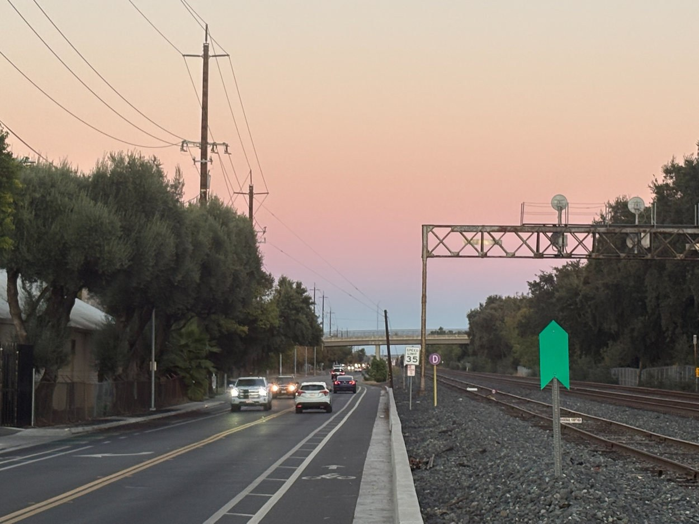
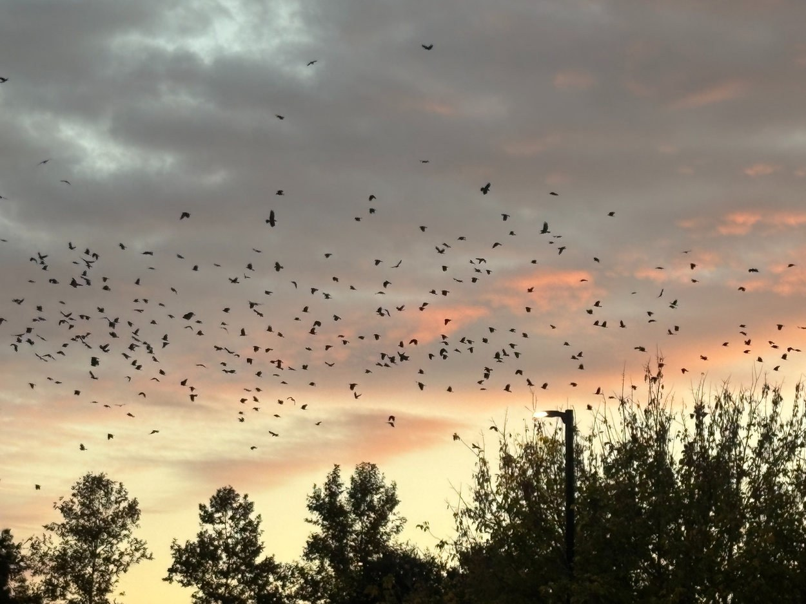
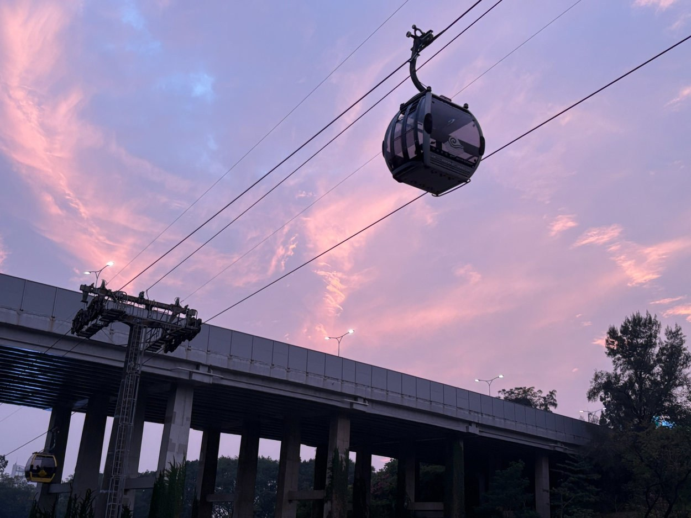
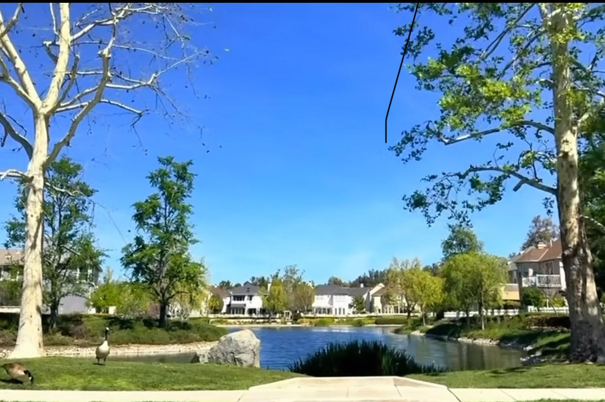
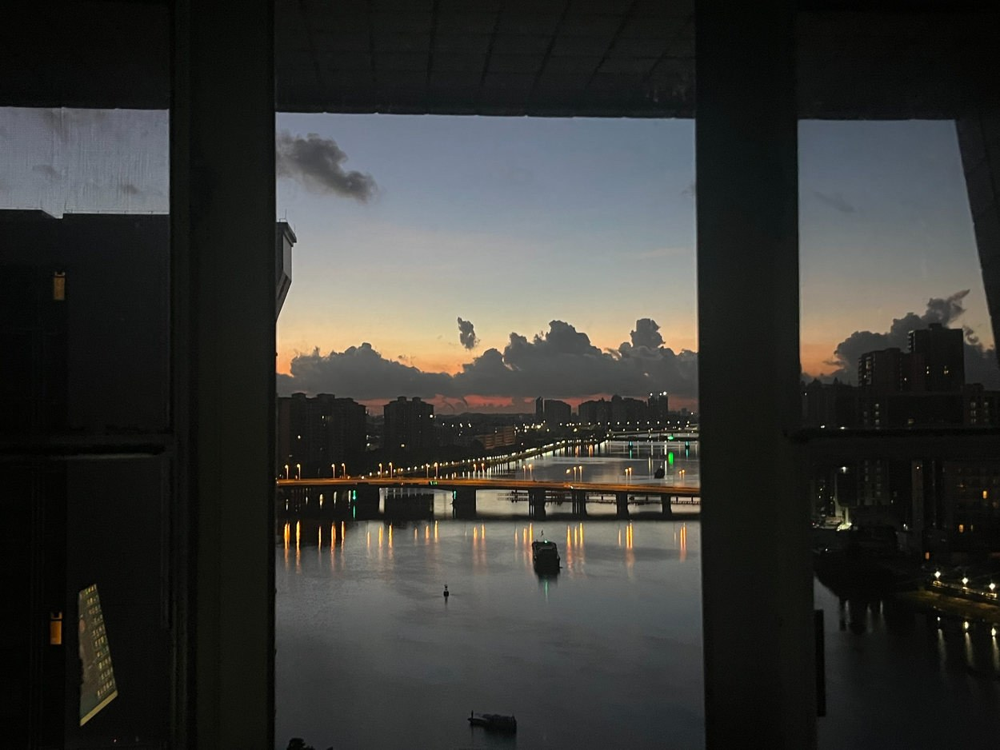

DES 157A / EVERY PICTURE
Between Moments





01 / 06
BEHIND THE FRAME
Pink Hour by the Tracks
The road was busy, but the sky felt unusually calm.
The soft pink light made this everyday scene look different.
I wanted to remember this small moment before it disappeared.
A Sky Full of Wings
For a moment, the sky was filled with moving wings.
Dark clouds slowly gave way to orange and pale yellow light.
Everything changed so quickly that I stopped to watch.
Above the Evening Streets
The gondola passed quietly above the busy city.
Pink clouds spread across the purple evening sky.
For a few seconds, everything seemed to float.
The Last Light on Campus
Streetlights came on as the last daylight faded.
The buildings and trees became quiet silhouettes.
It was an ordinary walk at an unusually beautiful hour.
A Pause by the Water
The bright blue sky reflected in the still water.
Trees and houses framed a small, peaceful space.
I liked how simple and quiet the afternoon felt.
Lights Across the River
The city lights began to shimmer on the water.
Dark clouds gathered around the last orange light.
The view felt like a quiet frame inside a busy city.